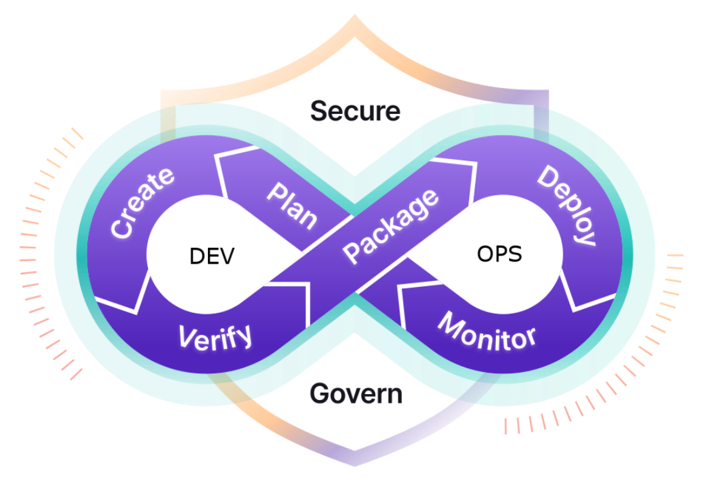
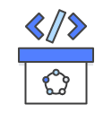

DevOps
What is DevOps ?
DevOps is the combination of cultural philosophies, practices, and tools that increases an organization’s ability to deliver applications and services at high velocity. It aimed at unifying software development (dev) and computer infrastructure management (ops), including system administration.
DevOps Stages
The DevOps lifecyle stretches from the beginning of software development through to delivery, maintenance, and security.

The stages of the DevOps lifecycle are:
- Plan: Organize the work that needs to be done, prioritize it, and track its completion.
- Create: Write, design, develop and securely manage code and project data with your team.
- Verify: Ensure that your code works correctly and adheres to your quality standards — ideally with automated testing.
- Package: Package your applications and dependencies, manage containers, and build artifacts.
- Release: Deploy the software to end users.
- Configure: Manage and configure the infrastructure required to support your applications.
- Monitor: Track performance metrics and errors to help reduce the severity and frequency of incidents.
- Secure: Check for vulnerabilities through static and dynamic tests, fuzz testing, and dependency scanning.
- Govern: Manage security vulnerabilities, policies, and compliance across your organization.
Benefits of DevOps
| Benefit | Description |
|---|---|
|
Speed: Move at high velocity so you can innovate for customers faster, adapt to changing markets better, and grow more efficient at driving business results. The DevOps model enables your developers and operations teams to achieve these results. For example, microservices and continuous delivery let teams take ownership of services and then release updates to them quicker. |
|
|
Rapid Delivery: Increase the frequency and pace of releases so you can innovate and improve your product faster. The quicker you can release new features and fix bugs, the faster you can respond to your customers’ needs and build competitive advantage. Continuous integration and continuous delivery are practices that automate the software release process, from build to deploy. |
|
 |
Reliability: Ensure the quality of application updates and infrastructure changes so you can reliably deliver at a more rapid pace while maintaining a positive experience for end users. Use practices like continuous integration and continuous delivery to test that each change is functional and safe. Monitoring and logging practices help you stay informed of performance in real-time. |
|
Scale: Operate and manage your infrastructure and development processes at scale. Automation and consistency help you manage complex or changing systems efficiently and with reduced risk. For example, infrastructure as code helps you manage your development, testing, and production environments in a repeatable and more efficient manner. |
|
 |
Improved Collaboration: Build more effective teams under a DevOps cultural model, which emphasizes values such as ownership and accountability. Developers and operations teams collaborate closely, share many responsibilities, and combine their workflows. This reduces inefficiencies and saves time (e.g. reduced handover periods between developers and operations, writing code that takes into account the environment in which it is run). |
 |
Security: Move quickly while retaining control and preserving compliance. You can adopt a DevOps model without sacrificing security by using automated compliance policies, fine-grained controls, and configuration management techniques. For example, using infrastructure as code and policy as code, you can define and then track compliance at scale. |
DevOps Practices
| Practice | Description |
|---|---|
|
Continuous Integration: Continuous integration is a software development practice where developers regularly merge their code changes into a central repository, after which automated builds and tests are run. The key goals of continuous integration are to find and address bugs quicker, improve software quality, and reduce the time it takes to validate and release new software updates. |
|
|  |
Continuous Delivery: Continuous delivery is a software development practice where code changes are automatically built, tested, and prepared for a release to production. It expands upon continuous integration by deploying all code changes to a testing environment and/or a production environment after the build stage. When continuous delivery is implemented properly, developers will always have a deployment-ready build artifact that has passed through a standardized test process. |
|
Microservices: The microservices architecture is a design approach to build a single application as a set of small services. Each service runs in its own process and communicates with other services through a well-defined interface using a lightweight mechanism, typically an HTTP-based application programming interface (API). Microservices are built around business capabilities; each service is scoped to a single purpose. You can use different frameworks or programming languages to write microservices and deploy them independently, as a single service, or as a group of services. |
|
|
Infrastructure as Code: Infrastructure as code is a practice in which infrastructure is provisioned and managed using code and software development techniques, such as version control and continuous integration. The cloud’s API-driven model enables developers and system administrators to interact with infrastructure programmatically, and at scale, instead of needing to manually set up and configure resources. Thus, engineers can interface with infrastructure using code-based tools and treat infrastructure in a manner similar to how they treat application code. Because they are defined by code, infrastructure and servers can quickly be deployed using standardized patterns, updated with the latest patches and versions, or duplicated in repeatable ways. |
|
|
Monitoring and Logging: Organizations monitor metrics and logs to see how application and infrastructure performance impacts the experience of their product’s end user. By capturing, categorizing, and then analyzing data and logs generated by applications and infrastructure, organizations understand how changes or updates impact users, shedding insights into the root causes of problems or unexpected changes. Active monitoring becomes increasingly important as services must be available 24/7 and as application and infrastructure update frequency increases. Creating alerts or performing real-time analysis of this data also helps organizations more proactively monitor their services. |
|
 |
Communication and Collaboration: Increased communication and collaboration in an organization is one of the key cultural aspects of DevOps. The use of DevOps tooling and automation of the software delivery process establishes collaboration by physically bringing together the workflows and responsibilities of development and operations. Building on top of that, these teams set strong cultural norms around information sharing and facilitating communication through the use of chat applications, issue or project tracking systems, and wikis. This helps speed up communication across developers, operations, and even other teams like marketing or sales, allowing all parts of the organization to align more closely on goals and projects. |
Conclusion
DevOps has proven to be a transformative approach for organizations aiming to bridge the gap between development and operations, fostering a culture of collaboration, continuous improvement, and automation. By embracing DevOps practices, teams can accelerate their delivery cycles, improve software quality, and enhance scalability and reliability, ultimately driving faster, more reliable innovation. The adoption of continuous integration, continuous delivery, automated testing, and proactive monitoring empowers organizations to respond quickly to market demands and maintain a competitive edge.